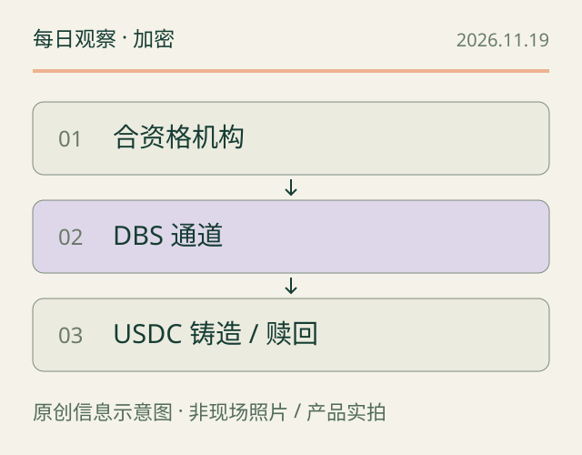
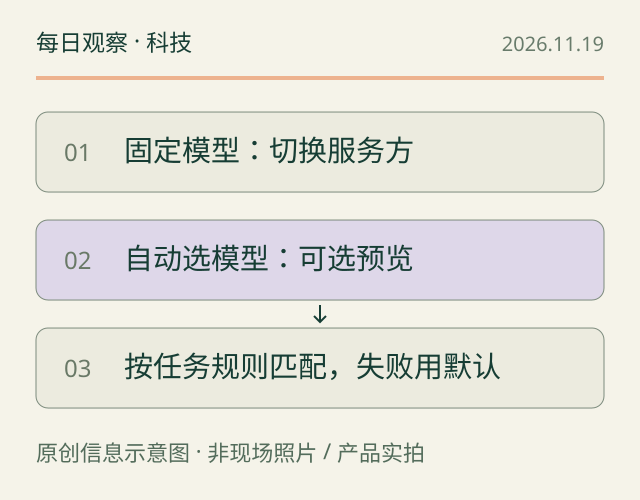
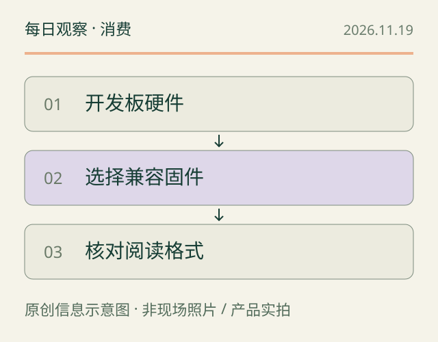
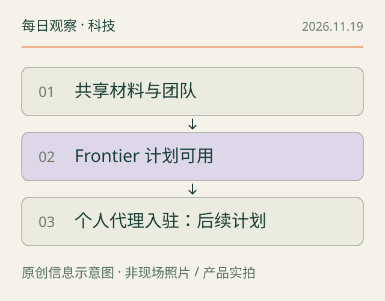
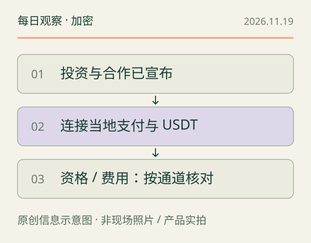
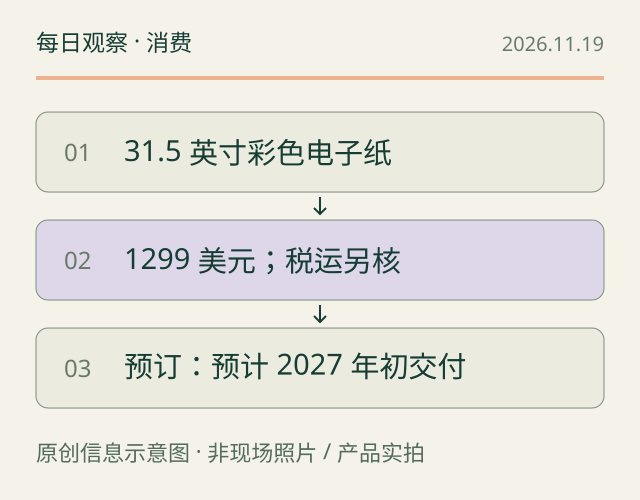
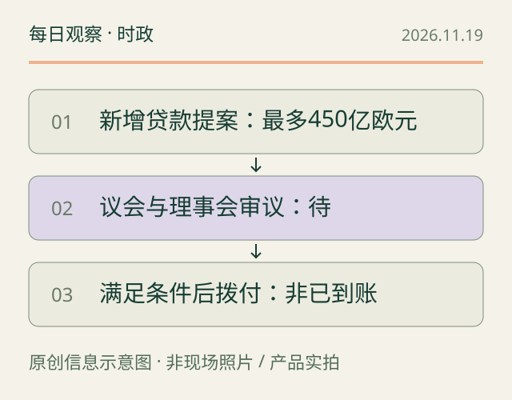

本期原创图像说明
以下图像由每日观察以代码绘制，只呈现正文已注明来源的信息；没有使用来源网站的照片、商标或产品截图，不代表来源方背书。图中文字不是实测界面或现场记录。本期拥有原创图形的使用权；文中第三方事实与引用各自保留权利。
DBS开放USDC铸造赎回，改变的是机构的兑换入口
绘制：每日观察编辑制作 · 日期：2026-11-19 · 原创SVG信息示意

来源与日期
- www.circle.com ↗ · 2026-11-18
- www.dbs.com ↗ · 2026-11-18
- www.circle.com ↗ · 2026-10-15更新
- www.mas.gov.sg ↗ · 2026-09-01
Perplexity 统一模型入口：服务方故障切换之外，还提供自动选模型预览
绘制：每日观察编辑制作 · 日期：2026-11-19 · 原创SVG信息示意

来源与日期
- community.perplexity.ai ↗ · 2026-11-17 20:38（论坛显示，时区待核）
- www.perplexity.ai ↗ · 页面未显示可核发布日期
- docs.perplexity.ai ↗ · 动态文档；2026-11-19读取
- docs.perplexity.ai ↗ · 动态文档；2026-11-19读取
小纸 Pico 在少数派上架，买到的是可换固件的墨水屏开发板
绘制：每日观察编辑制作 · 日期：2026-11-19 · 原创SVG信息示意

来源与日期
- sspai.com ↗ · 2026-11-18
- sspai.com ↗ · 动态商品页，2026-11-19凌晨核验
- dot.mindreset.tech ↗ · 页面未标
欧盟电网许可谈判达成临时协议，仍待正式通过
绘制：每日观察编辑制作 · 日期：2026-11-19 · 原创SVG信息示意

来源与日期
- www.consilium.europa.eu ↗ · 2026-11-18 01:35（页面显示）
Copilot Workspaces 开放给 Frontier 用户，个人代理入驻仍在后续计划中
绘制：每日观察编辑制作 · 日期：2026-11-19 · 原创SVG信息示意

来源与日期
- news.microsoft.com ↗ · Ignite 2026；会议11/17–20，页面动态更新
- www.microsoft.com ↗ · 2026-11-17
Google临时对话关掉了哪些记录，又留下哪些边界
绘制：每日观察编辑制作 · 日期：2026-11-19 · 原创SVG信息示意

来源与日期
- blog.google ↗ · 2026-11-17
- support.google.com ↗ · 动态文档；11/19核验
- policies.google.com ↗ · 动态文档；11/19核验
Tether 投资 Stables，跨境支付扩张仍要逐条确认落地通道
绘制：每日观察编辑制作 · 日期：2026-11-19 · 原创SVG信息示意

来源与日期
- tether.io ↗ · 2026-11-17
1299美元的电子纸画框，先看预订和退出条件
绘制：每日观察编辑制作 · 日期：2026-11-19 · 原创SVG信息示意

来源与日期
- sspai.com ↗ · 2026-11-18
- trmnl.com ↗ · 2026-11-16
- shop.trmnl.com ↗ · 动态页；2026-11-19凌晨读取
- shop.trmnl.com ↗ · 页面未标可核日期；11/19读取
- trmnl.com ↗ · 页面未标可核日期；11/19读取
欧盟再提450亿欧元援乌贷款：钱从哪里来，什么时候需要还
绘制：每日观察编辑制作 · 日期：2026-11-19 · 原创SVG信息示意

来源与日期
- enlargement.ec.europa.eu ↗ · 2026-11-18
- ec.europa.eu ↗ · 2026-11-18
- commission.europa.eu ↗ · 2026-11-18，COM(2026)636 final
- www.elibrary.imf.org ↗ · 2026-07-21
- www.imf.org ↗ · 2026-10-01
两个 AI 编程任务，先分开文件，再分开聊天
绘制：每日观察编辑制作 · 日期：2026-11-19 · 原创SVG信息示意

来源与日期
- www.bilibili.com ↗ · 2026-11-08 17:14:07（原页显示，时区未另标）
- www.cnblogs.com ↗ · 2026-11-10 15:08（作者博客显示）
- git-scm.com ↗ · 文档对应Git 2.56；2026-11-19读取